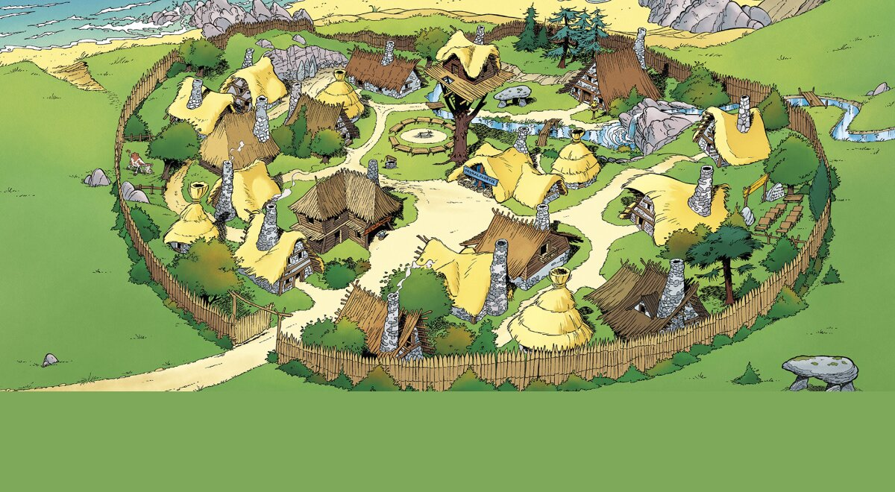

Astérix, anciennement Astérix le Gaulois, est une série de bande dessinée française créée le 29 octobre 1959 par le scénariste français René Goscinny et le dessinateur français Albert Uderzo dans le no 1 du journal français Pilote. Après la mort de René Goscinny en 1977, Albert Uderzo poursuit seul la série, puis passe la main en 2013 au duo formé de Jean-Yves Ferri (scénario) et de Didier Conrad (dessin). En 2023, la série conserve Didier Conrad comme dessinateur mais c'est Fabcaro qui en assure désormais le scénario. La série compte 40 tomes en octobre 2023.
(c'est lui ^^)
La série met en scène les habitants d'un petit village gaulois d'Armorique qui, en 50 av. J.-C. (peu après la conquête romaine), poursuivent seuls la lutte contre l'envahisseur grâce à une potion magique inventée par leur druide, boisson qui donne une force surhumaine à quiconque en boit. Les personnages principaux de la série sont le guerrier Astérix et le livreur de menhirs Obélix, chargés par le village de déjouer les plans des Romains ou d'aller soutenir tout peuple qui a besoin d'aide contre les Romains.
(leur fameux village)
Publiée dans Pilote de 1959 à 1973, la série est éditée parallèlement en album cartonné, pour les vingt-quatre premiers albums, d'abord aux éditions Dargaud, puis à partir de 1998 aux éditions Hachette, et enfin aux éditions Albert René pour les dix albums suivants. Les ventes cumulées des albums, traduits dans cent dix-sept langues et dialectes, représentent 393 millions d'exemplaires, ce qui en fait la deuxième bande dessinée la plus vendue dans le monde après le manga One Piece.
(ça fait beaucoup!!)
La série est avant tout humoristique et parodie principalement la société française contemporaine à travers ses stéréotypes et ses régionalismes, ainsi que des traditions et coutumes emblématiques de pays étrangers. Le comique de répétition est très présent avec notamment le naufrage des pirates. Le dessin est lui semi-réaliste, fortement inspiré de l'école de Marcinelle.
(clique sur le logo astérix pour accéder au site officiel !)